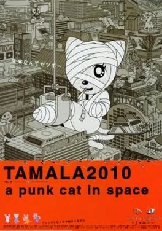

The genetics
Genetics is a small but telling element of this avant-garde animated satire. According to the English Wikipedia, Tamala was genetically engineered in 1869 to remain forever about a year and a half old, so that she could serve as the immortal mascot of the conglomerate CATTY & Co., an offshoot of the Minerva religion whose power depends on her repeated sacrifice. Genetic engineering is thus one of the tools by which a corporate cult manufactures and owns a cute brand character. The film, which borrows from Thomas Pynchon's The Crying of Lot 49, is a satire of consumerism and corporate power rather than a story about science, and its genetics is never explained; reviewers found the second half close to incomprehensible.
How genetics is portrayed
- Overall portrayal of genetics
- negative Genetic engineering appears only as a tool of a sinister corporate cult that turns a living being into a brand; the film satirises it as part of corporate control.
- Outcome of the genetic intervention
- negative The engineering makes Tamala an eternally young commodity trapped in a cycle of sacrifice that serves the corporate cult's domination.
- CATTY & Co.
- villain Aim: commercial, power (negative). The conglomerate, an offshoot of the Minerva cult, engineered Tamala to stay young forever as its advertising mascot and uses her ritual sacrifice to gain power; its agent shoots her down and at the end it takes over Hate City.
The story
On 'Cat Earth', a Tokyo ruled by advertising and corporations, the foul-mouthed kitten Tamala runs away from her human foster mother in a spaceship, heading for her birthplace in Orion. She is shot down by the immortal Mysterious Postcat, an agent of the conglomerate CATTY & Co., and crash-lands near Hate City on Planet Q, a violent city of cats and dogs. She falls for the cultured cat Michelangelo and discovers a mural of the ancient Minerva cult and a statue of a cat named Tatla, before being eaten by Kentauros, a sadistic dog dressed as a police biker. In a lecture, Professor Nominos, apparently an older Michelangelo, reveals that CATTY & Co. grew out of the Minerva cult and that Tamala has been its mascot since 1869, a recurring reincarnation of Tatla whose ritual sacrifice feeds the cult's power. Tamala revives and leaves for Orion while CATTY & Co. takes over Hate City.